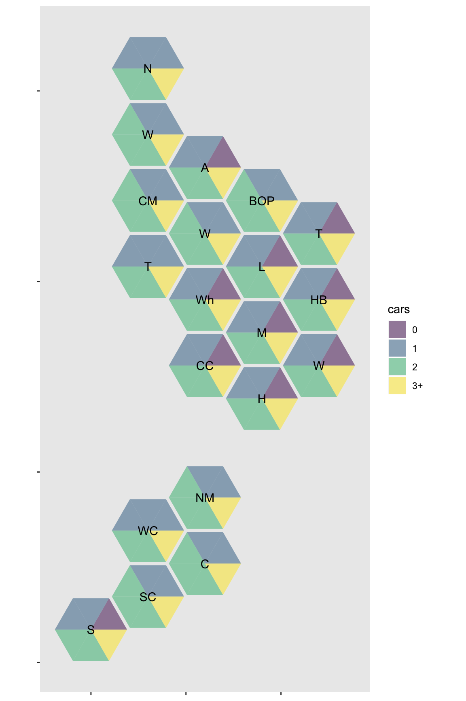
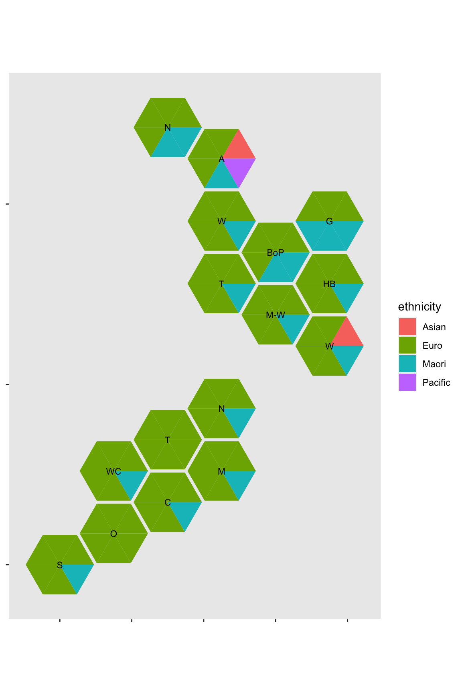

triangles.RmdSize and shading allow a single value to be displayed for each area unit. In order to display categorical data, we divide each hex into six triangles and aim to assign \([6p]\) triangles to a category with proportion \(p\) of the total. Simply rounding \(6p\) to the nearest integer does not guarantee that the number of triangles assigned will add up to six; we use the Webster/Saint-Laguë algorithm to allocate exactly six triangles. This is the same idea as used for hexbin scatterplots in the hextri package.
These triangle maps are superficially related to pie charts, but they do not share the deficiencies of pie charts. The standard objection to pie charts is the difficulty of judging angles; in these triangle maps the angles are discrete and the number of possibilities is small, so counting triangles is fast and reliable. Conversely, an important limitation of the triangular subdivisions is their discreteness: they cannot display a category with probability 1/12th or less. More generally, they will be biased according to whether the category proportion is rounded up or down.
We have
tri_alloc() for allocating triangles based on category countsdhbtri() and regiontri()
geom_dhb_tri and geom_region_tri()
The base-R functions work on wide format data, with a six-column matrix giving the triangle assignments. The ggplot2 geoms work on long format data, with a single column of colours and an identifier to map them to triangles.
We have data on car ownership in the District Health Board areas, from Stats New Zealand.
library(DHBins)
## Loading required package: ggplot2## dhb none one two more
## 1 Northland 4077 22161 20652 7407
## 2 Waitemata 8658 57492 72768 33219
## 3 Auckland 16752 54840 52113 20340
## 4 Counties Manukau 8214 40344 53991 29022
## 5 Waikato 9168 48396 49401 20016
## 6 Lakes 2820 13647 13020 4968The first step is to allocate triangles
tris<-tri_alloc(dhb_cars[,-1], c("0","1","2","3+"), names=dhb_cars$dhb ) tri_data<-data.frame(DHB=rep(rownames(tris),6), cars=as.vector(tris), tri_id=rep(1:6,each=nrow(tris))) head(tris)
## [,1] [,2] [,3] [,4] [,5] [,6]
## Northland "1" "1" "1" "2" "2" "3+"
## Waitemata "1" "1" "2" "2" "2" "3+"
## Auckland "0" "1" "1" "2" "2" "3+"
## Counties Manukau "1" "1" "2" "2" "2" "3+"
## Waikato "1" "1" "2" "2" "2" "3+"
## Lakes "0" "1" "1" "2" "2" "3+"Now use ggplot to
library(ggplot2) ggplot(tri_data)+ geom_dhbtri(aes(map_id=DHB,class_id=tri_id, fill=cars),alpha=0.5)+ scale_fill_viridis_d()+ geom_label_dhb(short=TRUE, size=4)

The data on ethnicity come from the Census, now for the Regions. For the benefit of non-NZ people, the “MELAA” group is Middle East, Latin America, and Africa“, essentially,”Other“.
data(region_ethnicity) tri_eth<-tri_alloc(as.matrix(region_ethnicity[,-1]), classes=c("Asian","Euro","Maori","MELAA","Pacific"), names=region_ethnicity$Area) tri_data<-data.frame(Region=rep(rownames(tri_eth),6), ethnicity=as.vector(tri_eth), tri_id=rep(1:6,each=nrow(tri_eth))) ggplot(tri_data)+ geom_regiontri(aes(map_id=Region,class_id=tri_id, fill=ethnicity))+ geom_label_region(colour="Black", short=TRUE,cex=3)
